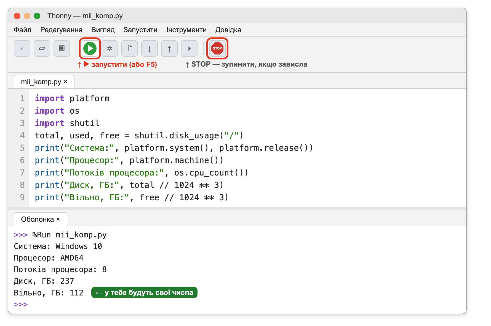

Цифрове робоче місце — це пристрої, програми та інтернет-сервіси, з якими людина вчиться або працює. Воно не прив'язане до одного столу: увійшов у свій акаунт з ноутбука чи телефона — і твої файли з тобою.
комп'ютер, монітор, клавіатура, мишка, навушники, принтер
операційна система, браузер, Thonny, текстовий редактор
Wi-Fi, акаунт, пошта, хмарний диск, відеозустрічі
| Вид | Що вміє найкраще |
|---|---|
| Настільний ПК | найпотужніший за свою ціну, легко замінити деталь; стоїть на місці |
| Моноблок | комп'ютер в одному корпусі з монітором, мало дротів |
| Ноутбук | є екран, клавіатура і батарея — працює будь-де |
| Планшет, смартфон | легкі, сенсорний екран, завжди з собою; довгий код чи текст набирати незручно |
| Ігрова консоль | комп'ютер, зроблений для ігор на телевізорі |
| Одноплатний комп'ютер | уся машина на одній маленькій платі (Raspberry Pi): роботи, розумний дім |
| Вбудований комп'ютер | захований у пральній машині, авто, банкоматі; робить одну справу |
| Сервер | працює цілодобово, зберігає сайти й файли для багатьох людей |
| Суперкомп'ютер | тисячі процесорів разом: прогноз погоди, наука |
Вибери вид зі списку.
Оперативна пам'ять — скільки програм працює одночасно без гальмувань. Диск — скільки файлів поміститься. Батарея — скільки працює без розетки.
| Оперативна пам'ять | Диск | Вага | Батарея | Клавіатура | Ціна | |
|---|---|---|---|---|---|---|
| А | 8 ГБ | 512 ГБ | 1,4 кг | 10 год | є | 28 000 грн |
| Б | 32 ГБ | 2 000 ГБ | 9 кг | немає | є | 65 000 грн |
| В | 6 ГБ | 128 ГБ | 0,5 кг | 12 год | немає | 14 000 грн |
| Г | 256 ГБ | 16 000 ГБ | 25 кг | немає | немає | 240 000 грн |

| Рядок | Що робить |
|---|---|
рядки 1–3 | підключають набори команд: platform — про систему, os — про процесор, shutil — про диск |
shutil.disk_usage("/") | повертає три числа про диск: усього, зайнято, вільно |
platform.system() | назва операційної системи |
platform.machine() | тип процесора |
os.cpu_count() | скільки потоків процесора працює одночасно |
// 1024 ** 3 | переводить байти в гігабайти: 1 ГБ = 1024 · 1024 · 1024 байтів |
| Рядок | Що робить |
|---|---|
рядки 1–3 | програма питає місце роботи, чи є відео і скільки грошей; гроші перетворює на число |
рядки 4–5 | усі три умови разом (and): вдома, відео і від 40 000 грн |
рядки 6–7 | сюди Python доходить, лише якщо рядок 4 не спрацював |
рядки 8–9 | для роботи в дорозі, від 20 000 грн |
рядки 10–11 | будь-де, якщо є хоча б 8 000 грн |
рядки 12–13 | усі інші випадки |
Сам: додай ще одну гілку elif: якщо в дорозі, з відео і від 50 000 грн — Потужний ноутбук. Подумай, куди її вставити: до рядка 8 чи після.
| Рядок | Що робить |
|---|---|
disk * 1024 | гігабайти в мегабайти: 1 ГБ = 1024 МБ |
mb // 4 | скільки цілих фото по 4 МБ |
disk // 5 | скільки цілих фільмів по 5 ГБ |
disk % 5 | остача: скільки ГБ лишиться після фільмів |
У 1971 році перший мікропроцесор мав 2300 транзисторів — крихітних перемикачів. Далі їх кількість подвоювалася приблизно кожні 2 роки (закон Мура). Коли їх стане мільйон?
| Рядок | Що робить |
|---|---|
while n < 1000000: | повторює, поки транзисторів менше мільйона |
n = n * 2 | подвоює кількість |
year = year + 2 | минає 2 роки |
print("Рік:", year) | після циклу: рік, коли мільйон досягнуто |
Справжній процесор з понад мільйоном транзисторів (Intel 80486) з'явився саме 1989 року.
Вивчити, що таке цифрове робоче місце. Назвати 3 види комп'ютерів.